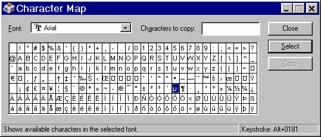
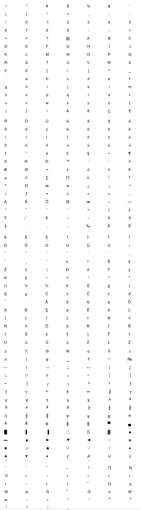

Home
SF MOMA
Arial
Designed by Monotype in 1992
About Arial
The font wars between Adobe and the Apple/Microsoft alliance heated up with the release of Windows 3.1 in 1992. It was the first program to include TrueType fonts rather than PostScript ones. Its thirteen core fonts—all developed for Microsoft by Monotype—were, in alphabetical order: Arial, Bookman Oldstyle, Book Antiqua (Palatino in disguise), Corsiva, Century Schoolbook, Century Gothic, and Times New Roman. Arial, designed in 1988, has since become one of the most widely-used fonts thanks to its resemblance to Helvetica—Monotype deliberately designed it to match the set widths of PostScript Helvetica—and to its presence in Microsoft products.
Arial 60pt
The quick brown fox jumps over the lazy dog
Arial 45pt
The quick brown fox jumps over the lazy dog
Arial 24pt
The quick brown fox jumps over the lazy dog
Arial 14pt
The quick brown fox jumps over the lazy dog
Arial 9pt
The quick brown fox jumps over the lazy dog

